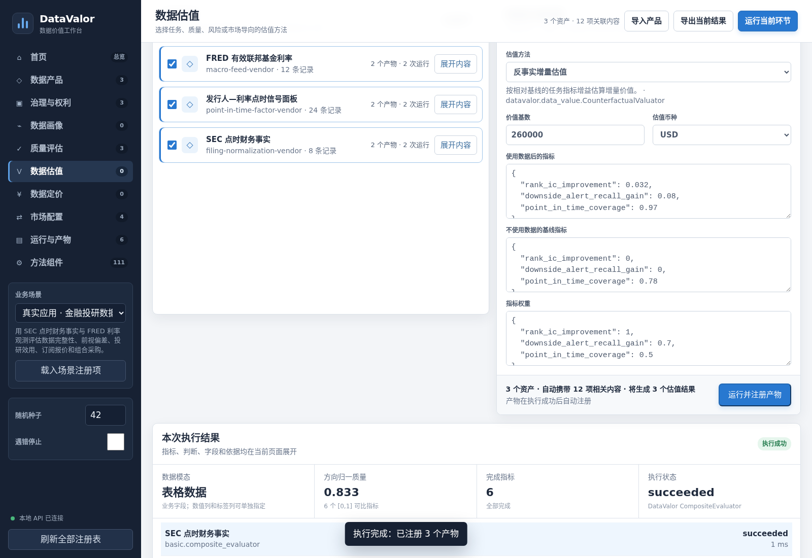

03 / VALUE
估计数据对指定研究任务的增量价值
DataValor 不把通用质量分数直接当作价格。当前案例比较使用候选数据前后的研究信号，并把增量效用、任务权重与不确定性写入估值报告。
ACTUAL DATAVALOR WORKBENCH
真实工作台 · 数据估值配置
左侧选中三个金融数据资产；右侧设置反事实估值方法和价值参数。

打开原图 ↗输入
选中 SEC 点时财务事实、FRED DFF 和发行人—利率点时信号。
配置
使用 valuation.counterfactual；基础价值 260,000 USD，并填写 evaluation / baseline vectors。
输出
执行后检查逐资产估值、价值分解、状态与完整 artifact。